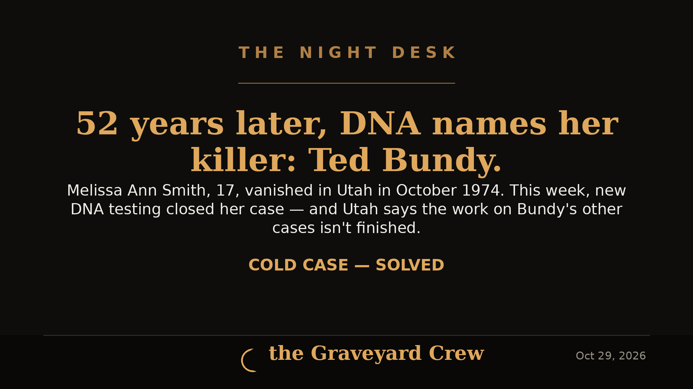
October 29, 2026
52 years later, DNA ties Ted Bundy to the murder of Melissa Ann Smith
Melissa Ann Smith, 17, vanished in Utah in October 1974 and was found dead nine days later. This week Utah investigators announced that new DNA testing has closed her case — her killer was Ted Bundy, executed in 1989.
READ THE STORY →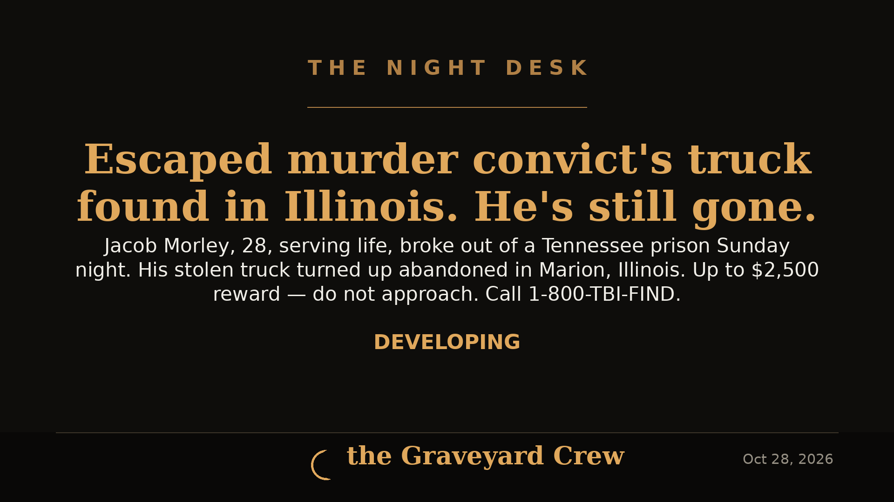
October 28, 2026
Manhunt crosses state lines: escaped Tennessee murder convict's stolen truck found abandoned in Illinois
Jacob Allen Morley, 28, serving life for the 2022 murder of his coworker Cody Birchfield, escaped a Tennessee prison Sunday night. The truck he stole was found abandoned early Tuesday in Marion, Illinois — Morley himself is still missing, and the TBI is offering up to $2,500 for information leading to his arrest.
READ THE STORY →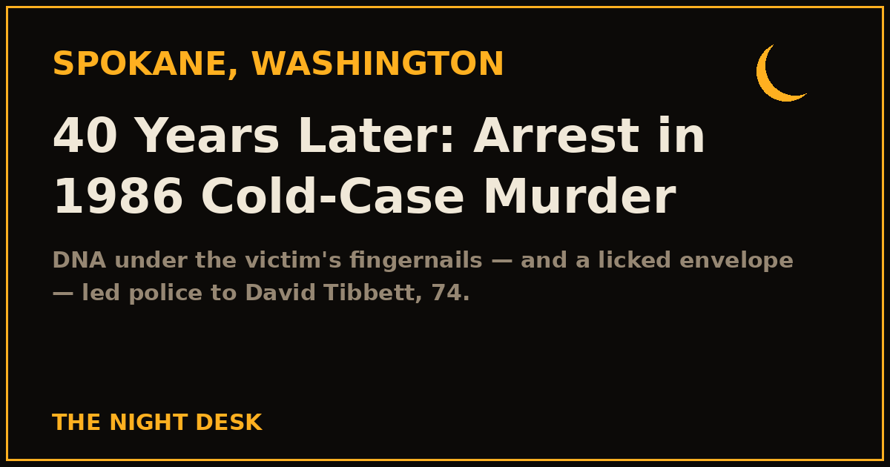
October 24, 2026
Nearly 40 years later: arrest in the 1986 Spokane cold-case murder of Mary Ann Turner
DNA preserved under Mary Ann Turner's fingernails — and a licked envelope from a police ruse — led Spokane detectives to David Tibbett, 74, charged with second-degree murder nearly four decades after she was found dead in a Spokane alley.
READ THE STORY →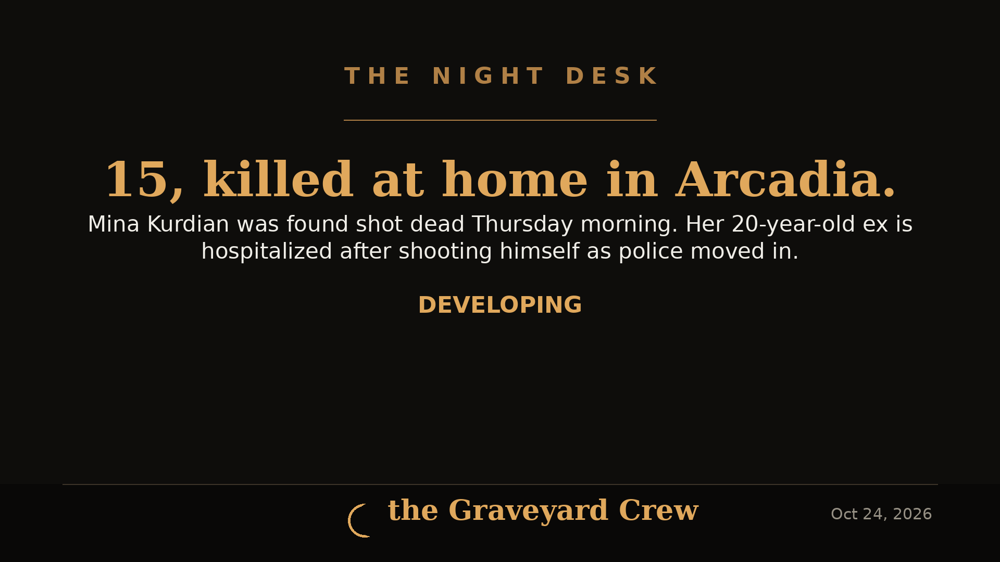
October 24, 2026
15-year-old Mina Kurdian killed at home in Arcadia; ex, 20, hospitalized after shooting himself as police moved in
Mina Kurdian, 15, was found shot dead Thursday morning in her Arcadia home. Her family says her 20-year-old ex showed up drunk at 5 a.m., was kicked out, then returned and shot through a window to get in.
READ THE STORY →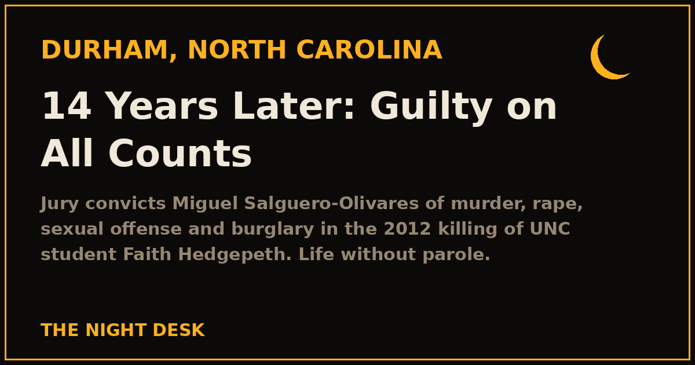
October 24, 2026
VERDICT: Guilty on all counts — the 14-year Faith Hedgepeth cold case finally gets its answer
A Durham jury convicted Miguel Salguero-Olivares of murder, rape, sexual offense and burglary in the 2012 killing of UNC student Faith Hedgepeth. Life without parole — 5,158 days after she died.
READ THE STORY →October 24, 2026
VERDICT: Rodney Hinton Jr. convicted of murder in the deputy-killing crash that shook Cincinnati
The jury rejected his insanity defense — and convicted him of murder, reckless homicide and felonious assault in the death of Deputy Larry Henderson. Sentencing is November 16.
READ THE STORY →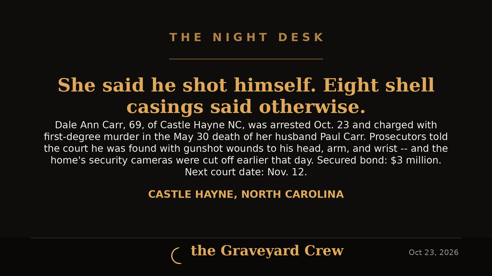
October 23, 2026
Charged — Five Months Later: 69-Year-Old North Carolina Woman Arrested in Husband's May Death
Dale Ann Carr, 69, was arrested October 23 and charged with first-degree murder in the May 30 death of her husband Paul Carr. She told investigators he shot himself — deputies found him with gunshot wounds to the head, arm, and wrist, eight shell casings in the house, and the home's security cameras cut off earlier that day.
READ THE STORY →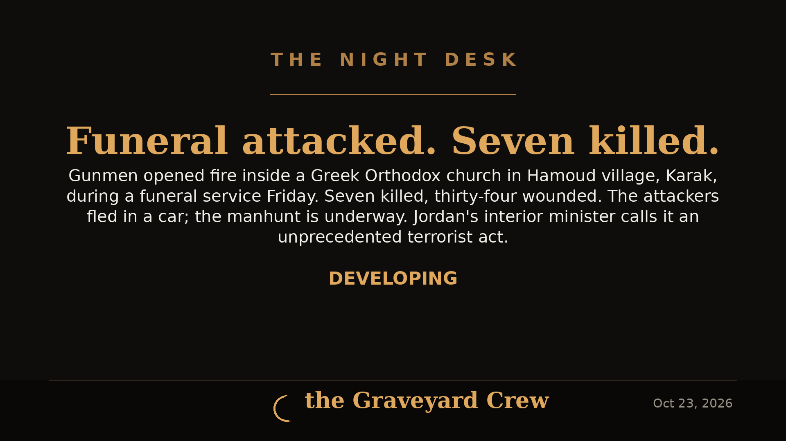
October 23, 2026
Seven Killed in Attack on Church Funeral in Jordan; Manhunt Underway
Gunmen opened fire during a funeral at a Greek Orthodox church in Hamoud village, Jordan's Karak governorate, on Friday, October 23, killing seven people and wounding 34. Interior Minister Mazen al-Faraya called it an unprecedented terrorist act. No group has claimed responsibility.
READ THE STORY →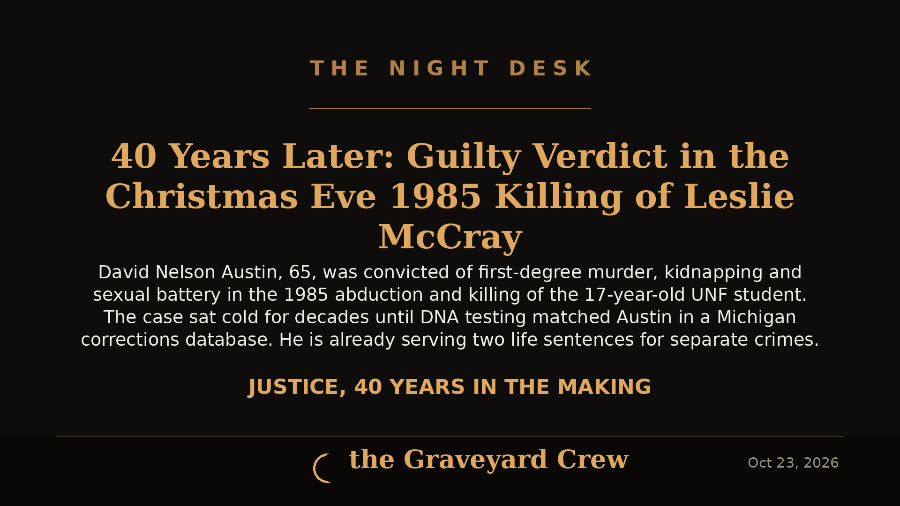
October 23, 2026
40 Years Later: Guilty Verdict in the Christmas Eve 1985 Killing of Leslie McCray
David Nelson Austin, 65, was convicted of first-degree murder, kidnapping and sexual battery in the 1985 abduction and killing of 17-year-old UNF student Leslie McCray. The case sat cold for decades until DNA testing matched Austin in a Michigan corrections database.
READ THE STORY →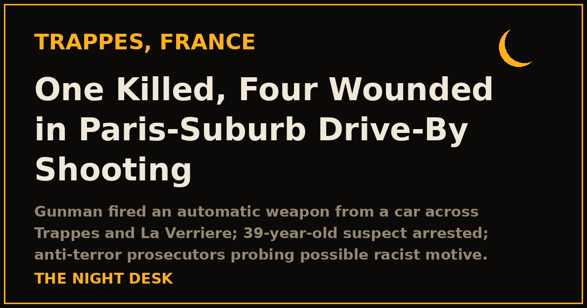
October 23, 2026
One Killed, Four Wounded in Paris-Suburb Drive-By Shooting; Suspect Arrested
A gunman opened fire from a vehicle in Trappes and La Verrière on Friday morning, killing one person and wounding at least four, including a 12-year-old girl. A 39-year-old suspect was arrested; France's anti-terrorism prosecutors are probing a possible racist motive.
READ THE STORY →October 23, 2026
FBI Foils Alleged ISIS-Linked Plot by 17-Year-Old to Assassinate Rep. Keith Self
Federal agents arrested a 17-year-old Texas boy accused of plotting to assassinate Rep. Keith Self at a public event and carry out a separate ISIS-inspired attack in North Texas. The arrest happened Oct. 5 — the news broke publicly this week.
READ THE STORY →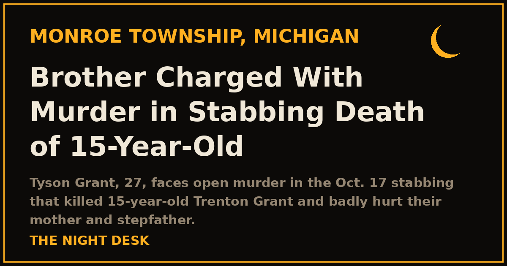
October 23, 2026
Brother Charged With Murder in Stabbing Death of 15-Year-Old Trenton Grant, Monroe Township
Tyson Grant, 27, faces open murder plus four life-maximum felonies in the Oct. 17 stabbing inside a burning mobile home on Raintree Boulevard that killed his brother, a Monroe High sophomore, and seriously hurt their mother and stepfather.
READ THE STORY →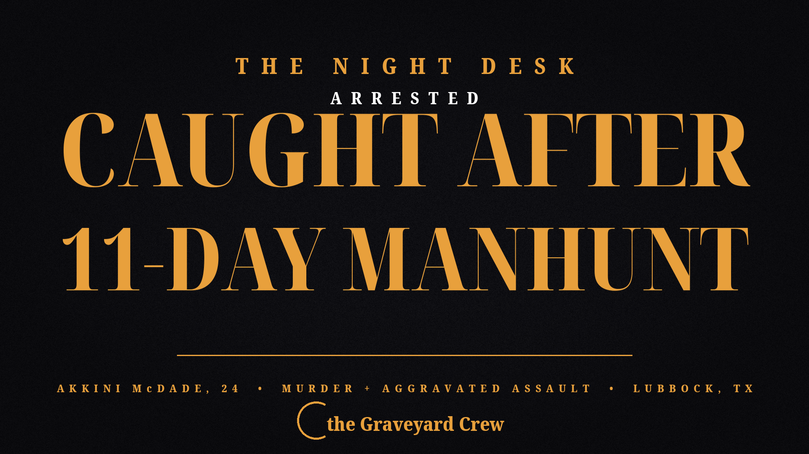
October 23, 2026
Arrested after an 11-day manhunt: Akkini McDade, 24, charged with murder in Lubbock shooting that killed Delton Lewis
A $5,000 reward, U.S. Marshals, and hundreds of overnight man-hours — how an 11-day manhunt ended with a murder arrest in East Lubbock.
READ THE STORY →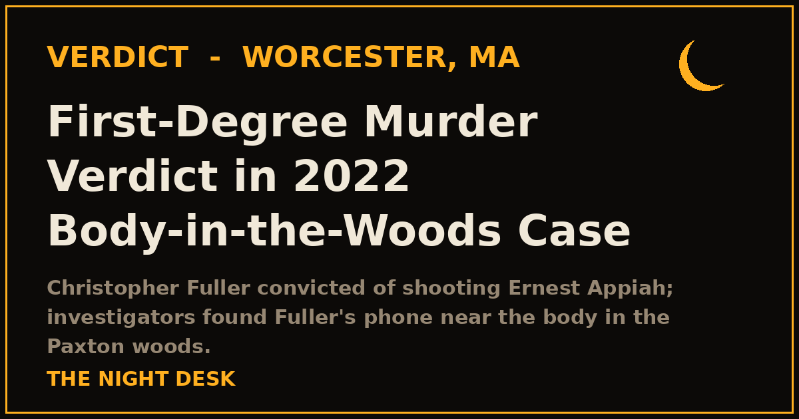
October 22, 2026
First-Degree Murder Verdict in 2022 Paxton Woods Case
A Worcester jury convicted Christopher Fuller of first-degree murder in the 2022 shooting of Ernest A. Appiah, whose body was found by a dog walker in the Paxton woods.
READ THE STORY →October 22, 2026
Virginia State Sen. L. Louise Lucas Indicted on Federal Racketeering, Marijuana Charges
The 82-year-old Senate president pro tempore surrendered Thursday as the DOJ unsealed a 45-page indictment charging her and six others — including two of her daughters and a grandson — with running an alleged illegal cannabis business and laundering its proceeds. AG Todd Blanche and FBI Director Kash Patel announced the charges at a Norfolk press conference.
READ THE STORY →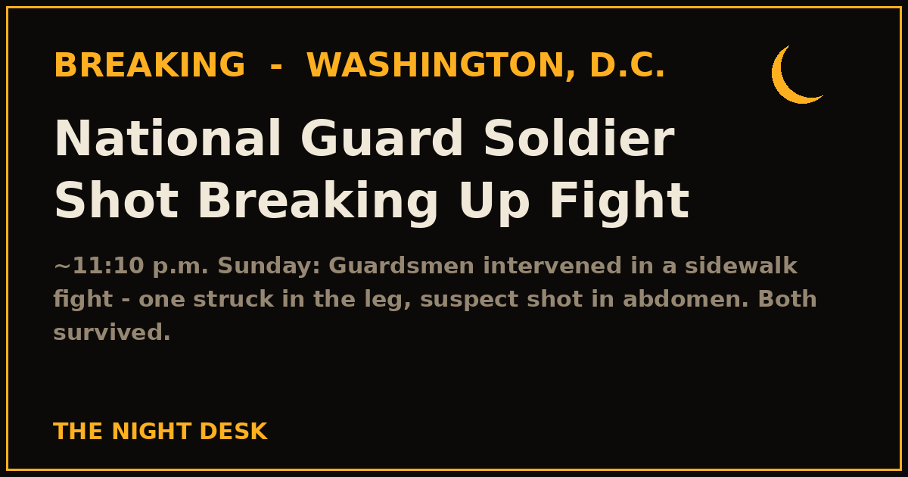
October 22, 2026
National Guard Soldier Shot While Breaking Up Fight in Washington, D.C.
Guard members tried to intervene in a sidewalk fight in southeast D.C. around 11:10 p.m. Sunday when an armed man opened fire — one Guardsman was struck in the leg and the suspect was shot in the abdomen. Both survived.
READ THE STORY →October 21, 2026
Louisiana Man Arrested on 510 Counts of Sex Crimes Against Children, Including First-Degree Rape
Shayne Austin Stewart, 33, of Pioneer, Louisiana, was arrested on 510 criminal counts — including 10 counts of first-degree rape of two children under 8 — after investigators say he photographed and recorded the abuse himself.
READ THE STORY →October 21, 2026
Government Websites Across Europe Go Dark Over Critical PHP Flaws
Two critical vulnerabilities in PHP — rated 9.2 out of 10, allowing attackers to run code without logging in — sent government, hospital and school websites across Europe offline as operators scrambled to patch.
READ THE STORY →October 21, 2026
Suspect in Seattle Gas Station Clerk's Killing Arrested in Chicago
Michael Oneal Fleming, 33, was arrested Tuesday evening in Chicago by U.S. Marshals after a week on the run. He's charged with first-degree murder in the Oct. 13 shooting of former co-worker Graeme Dobbeck, 36, at a Seattle 76 station — and Kenosha police call him a person of interest in a separate death investigation.
READ THE STORY →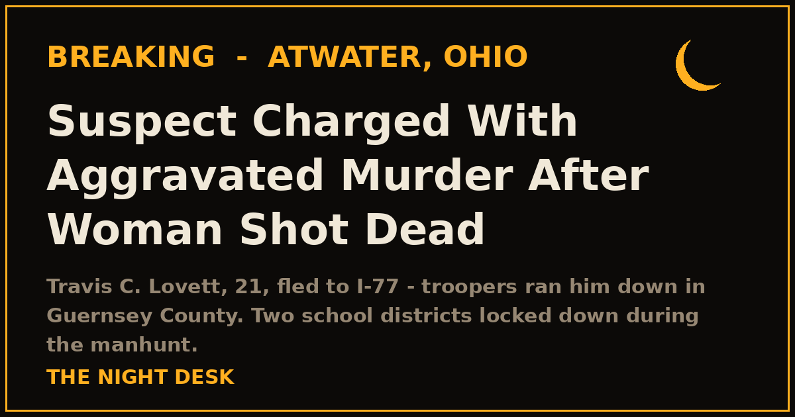
October 20, 2026
Aggravated Murder Charge Filed in Atwater Township Shooting Death
A woman was shot dead at an Atwater Township home Tuesday morning. Travis C. Lovett, 21, fled to I-77 and was run down by troopers in Guernsey County; he's charged with aggravated murder.
READ THE STORY →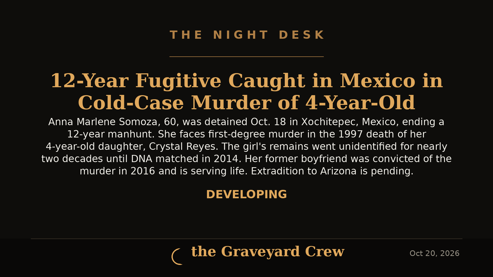
October 20, 2026
12-Year Fugitive Anna Somoza Caught in Mexico in Cold-Case Murder of 4-Year-Old Crystal Reyes
After 12 years on the run, Anna Marlene Somoza, 60, was detained in Xochitepec, Mexico, to face first-degree murder charges in the 1997 death of her 4-year-old daughter. Her former boyfriend was already convicted and is serving life.
READ THE STORY →October 20, 2026
Bomb Squad Investigating Suspicious Item Found in Vehicle on Erie's East 38th Street
Erie police and the bomb squad shut down part of East 38th Street on Tuesday morning after a suspicious item was found inside a vehicle; nearby JoAnna Connell Elementary went into a "Secure" status. Developing.
READ THE STORY →October 20, 2026
New York Times Investigation Raises Prospect of an O.J. Simpson Accomplice in 1994 Murders
Newly unsealed federal records show a mob-linked informant told authorities about the missing murder weapon — and his brother claimed he came home that night with blood on his hands and a bag that was dumped in a construction-site dumpster. Then the brother recanted.
READ THE STORY →October 19, 2026
Woman and Boy Under 10 Found Shot Dead Inside Indianapolis Condo
IMPD officers found a woman and a boy younger than 10 with gunshot wounds inside a northwest-side condo Sunday afternoon. Both were pronounced dead at the scene. Detectives are investigating all possibilities, including murder-suicide.
READ THE STORY →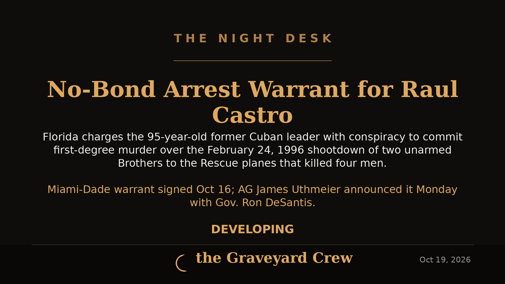
October 19, 2026
Florida Issues No-Bond Arrest Warrant for Raúl Castro Over 1996 Brothers to the Rescue Shootdown
A Miami-Dade judge signed a no-bond warrant charging the 95-year-old former Cuban leader with conspiracy to commit first-degree murder in the 1996 shootdown that killed four men. Attorney General James Uthmeier announced it Monday alongside Gov. Ron DeSantis.
READ THE STORY →Showing the latest 25 — browse the full archive →